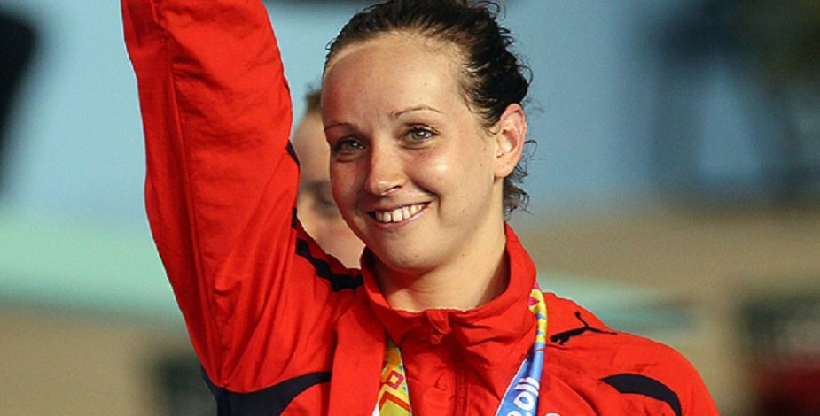

Mi primer
título
Un título no tan grande
Ya comenzó la
primavera
, pero aún hace
bastante frío
Bajada del texto anterior
Mis comidas favoritas:
Mis comidas favoritas:
Mis comidas favoritas:
Pizza
Humitas
Más Humitas
Churrasco
Mis deportes olímpicos favoritos
Volley Playa
Remo
Tiro con Sckeet
Puedes aprender sobre Kristel Kobrich
acá
